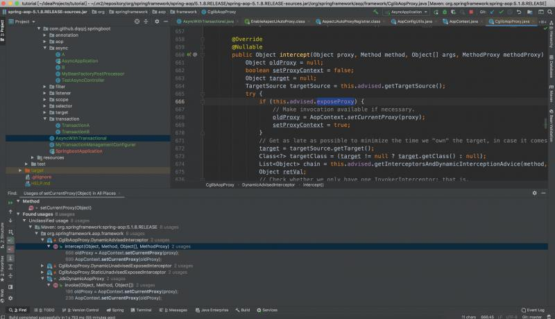

关于这个话题可能最多的是@Async和@Transactional一起混用，我先解释一下什么是代理对象内嵌调用，指的是一个代理方法调用了同类的另一个代理方法。首先在这儿我要声明事务直接的嵌套调用除外，至于为什么，是它已经将信息保存在线程级别了，是不是又点儿抽象，感觉吃力，可以看看我前面关于事务的介绍。
@Component
public class AsyncWithTransactional {
@Async
@Transactional
public void test() {
}
}这样一段代码会发生什么？熟悉的人都会感觉疑惑，都有效果么？谁先被代理增强？
自动代理创建器AbstractAutoProxyCreator它实际也是个BeanPostProcessor，所以它们的执行顺序很重要~~~
两者都继承自ProxyProcessorSupport所以都能创建代理，且实现了Ordered接口- - -- - ---AsyncAnnotationBeanPostProcessor默认的order值为Ordered.LOWEST_PRECEDENCE。但可以通过@EnableAsync指定order属性来改变此值。
AsyncAnnotationBeanPostProcessor在创建代理时有这样一个逻辑：若已经是Advised对象了，那就只需要把@Async的增强器添加进去即可。若不是代理对象才会自己去创建 public abstract class AbstractAdvisingBeanPostProcessor extends ProxyProcessorSupport implements BeanPostProcessor {
@Override
public Object postProcessAfterInitialization(Object bean, String beanName) {
if (bean instanceof Advised) {
advised.addAdvisor(this.advisor);
return bean;
}
// 上面没有return，这里会继续判断自己去创建代理~
}
}AbstractAutoProxyCreator默认值也同上。但是在把自动代理创建器添加进容器的时候有这么一句代码：beanDefinition.getPropertyValues().add("order", Ordered.HIGHEST_PRECEDENCE);自动代理创建器这个处理器是最高优先级@Transactional，所以自动代理会生效，因此它会先交给AbstractAutoProxyCreator把代理对象生成好了，再交给后面的处理器执行AbstractAutoProxyCreator先执行，所以AsyncAnnotationBeanPostProcessor执行的时候此时Bean已经是代理对象了，此时它会沿用这个代理，只需要把切面添加进去即可~想必大家都知道一点就是同类的方法调用只有入口方法被代理才会被增强，这是由于源码级别只处理入口方法调用，是你的话你也这样设计，不然方法栈那么深，你管得了那么多吗？既然知道了这个原因，那么我们接下来在看一下后面的列子。
java.lang.IllegalStateException: Cannot find current proxy: Set 'exposeProxy' property on Advised to 'true' to make it available.
at org.springframework.aop.framework.AopContext.currentProxy(AopContext.java:69)
at com.fsx.dependency.B.funTemp(B.java:14)
at sun.reflect.NativeMethodAccessorImpl.invoke0(Native Method)
at sun.reflect.NativeMethodAccessorImpl.invoke(NativeMethodAccessorImpl.java:62)
at sun.reflect.DelegatingMethodAccessorImpl.invoke(DelegatingMethodAccessorImpl.java:43)
at java.lang.reflect.Method.invoke(Method.java:498)
at org.springframework.aop.support.AopUtils.invokeJoinpointUsingReflection(AopUtils.java:343)
at org.springframework.aop.framework.JdkDynamicAopProxy.invoke(JdkDynamicAopProxy.java:206)
at com.sun.proxy.$Proxy44.funTemp(Unknown Source)
...这个异常在上述情况最容易出现，然而解决的方法都是@EnableAspectJAutoProxy(exposeProxy = true)
咦，是不是我们可以从容器中获取代理对象呢？没有错，从容器获取代理对象也是一种沿用代理对象来调用方法链的手段，但是你会用么？依赖于代理的具体实现而书写代码，这样移植性会非常差的。
Spring内建的类且都是代理类的处理类：CglibAopProxy和JdkDynamicAopProxy两者很类似，在处理这个逻辑上。所以此处只以JdkDynamicAopProxy作为代表进行说明即可。
我们知道在执行代理对象的目标方法的时候，都会交给InvocationHandler处理，因此做事情的在invoke()方法里：
final class JdkDynamicAopProxy implements AopProxy, InvocationHandler, Serializable {
...
@Override
@Nullable
public Object invoke(Object proxy, Method method, Object[] args) throws Throwable {
...
if (this.advised.exposeProxy) {
// Make invocation available if necessary.
oldProxy = AopContext.setCurrentProxy(proxy);
setProxyContext = true;
}
...
finally {
if (setProxyContext) {
// Restore old proxy.
AopContext.setCurrentProxy(oldProxy);
}
}
}
}最终决定是否会调用set方法是由this.advised.exposeProxy这个值决定的，因此下面我们只需要关心ProxyConfig.exposeProxy这个属性值什么时候被赋值为true的就可以了。
ProxyConfig.exposeProxy这个属性的默认值是false。其实最终调用设置值的是同名方法Advised.setExposeProxy()方法，而且是通过反射调用的,再次强调 看清楚后置处理器，@EnableAspectJAutoProxy(exposeProxy = true)作用的范围在AbstractAutoProxyCreator创建器，异步注解和缓存注解等就不行了，怎么解决后面在分析。
class AspectJAutoProxyRegistrar implements ImportBeanDefinitionRegistrar {
AspectJAutoProxyRegistrar() {
}
public void registerBeanDefinitions(AnnotationMetadata importingClassMetadata, BeanDefinitionRegistry registry) {
AopConfigUtils.registerAspectJAnnotationAutoProxyCreatorIfNecessary(registry);
AnnotationAttributes enableAspectJAutoProxy = AnnotationConfigUtils.attributesFor(importingClassMetadata, EnableAspectJAutoProxy.class);
if (enableAspectJAutoProxy != null) {
if (enableAspectJAutoProxy.getBoolean("proxyTargetClass")) {
AopConfigUtils.forceAutoProxyCreatorToUseClassProxying(registry);
}
//处理是否设置了该属性
if (enableAspectJAutoProxy.getBoolean("exposeProxy")) {
AopConfigUtils.forceAutoProxyCreatorToExposeProxy(registry);
}
}
}
}看一下是如何设置属性值的，我们后面可以采用这样的方式来设置
public static void forceAutoProxyCreatorToExposeProxy(BeanDefinitionRegistry registry) {
if (registry.containsBeanDefinition(AUTO_PROXY_CREATOR_BEAN_NAME)) {
BeanDefinition definition = registry.getBeanDefinition(AUTO_PROXY_CREATOR_BEAN_NAME);
definition.getPropertyValues().add("exposeProxy", Boolean.TRUE);
}
}什么时候使用的呢？

AopContext.setCurrentProxy(@Nullable Object proxy)在CglibAopProxy和JdkDynamicAopProxy代理都有使用。
@Component
public class AsyncWithTransactional {
//入口方法
@Transactional
public void transactional() {
//不使用代理对象调用的话，后续方法不会被增强
AsyncWithTransactional asyncWithTransactional = AsyncWithTransactional.class.cast(AopContext.currentProxy());
asyncWithTransactional.async();
}
@Async
public void async() {
}
}这样都完全ok的，但是如果换一下呢就会跑出异常。
@Transactional//@Transactional有此注解和没有毫无关系
@Async
public void transactional() {
AsyncWithTransactional asyncWithTransactional = AsyncWithTransactional.class.cast(AopContext.currentProxy());
asyncWithTransactional.async();
}
public void async() {
}根本原因就是关键节点的执行时机问题。在执行代理对象transactional方法的时候，先执行绑定动作AopContext.setCurrentProxy(proxy);然后目标方法执行（包括增强器的执行）invocation.proceed()。其实在执行绑定的还是在主线程里而并非是新的异步线程，所以在你在方法体内（已经属于异步线程了）执行AopContext.currentProxy()那可不就报错了嘛~
所以入口方法用了类似@Async的效果注解都会导致代理对象绑定不对，继而导致调用错误。
@Component
public class MyBeanFactoryPostProcessor implements BeanFactoryPostProcessor {
@Override
public void postProcessBeanFactory(ConfigurableListableBeanFactory beanFactory) throws BeansException {
BeanDefinition beanDefinition = beanFactory.getBeanDefinition(TaskManagementConfigUtils.ASYNC_ANNOTATION_PROCESSOR_BEAN_NAME);
beanDefinition.getPropertyValues().add("exposeProxy", true);
}
}这样解决了@Async的绑定问题，@EnableCaching也可以基于这样的思想来解决，以上就是我的简单例子，但是配合我的文字说明，相信大家可以举一反三，随意玩弄它们之间的调用关系。
其实如果Spring做出源码改变会更好的解决这个问题
@Async的代理也交给自动代理创建器来完成(Spring做出源码改变)@EnableAsync增加exposeProxy属性，默认值给false即可(Spring做出源码改变)不要在异步线程里使用AopContext.currentProxy()
AopContext.currentProxy()不能使用在非代理对象所在方法体内